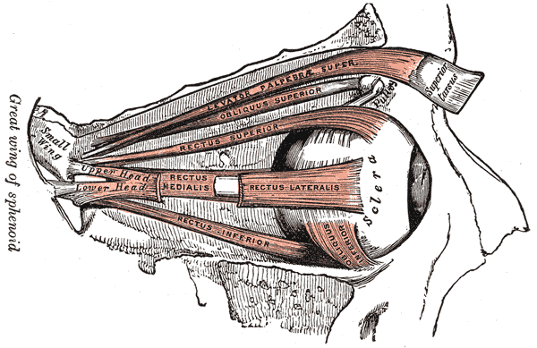

<!doctype html>
<html lang="ja">
<meta charset="utf-8">
<meta name="viewport" content="width=device-width, initial-scale=1">
<title>眼球を動かす6つの筋と支配神経</title>
<style>
  * { box-sizing: border-box; }
  body { margin: 0; color: #18354c; background: #f5f7f7; font-family: "BIZ UDPGothic","Yu Gothic","Meiryo",sans-serif; }
  .fig { max-width: 1040px; margin: auto; padding: 34px 38px 22px; background: #fff; }
  h1 { margin: 0; font-size: clamp(25px, 3.6vw, 38px); line-height: 1.4; letter-spacing: .015em; }
  header { border-bottom: 2px solid #23465b; padding-bottom: 19px; }
  .layout { display: grid; grid-template-columns: minmax(0, 1.6fr) minmax(255px, 1fr); gap: 30px; padding-top: 22px; }
  figure { margin: 0; }
  h2 { font-size: 20px; line-height: 1.5; margin: 0 0 13px; }
  img { display: block; width: 100%; height: auto; max-width: 600px; margin: 0 auto; }
  .orientation { display: flex; justify-content: space-between; margin: 8px 0 13px; padding: 6px 15px; border-block: 1px solid #dce4e7; color: #3c5460; font-size: 16px; font-weight: 700; }
  .note { margin: 0; font-size: 16px; line-height: 1.7; }
  aside { border-left: 1px solid #d6e2e6; padding-left: 24px; }
  dl { padding: 0; margin: 0; }
  dt { display: flex; align-items: baseline; gap: 9px; padding-top: 13px; border-top: 1px solid #d6e2e6; font-weight: bold; font-size: 22px; color: #163d52; }
  dt span { font-family: Georgia,serif; font-size: 24px; font-weight: normal; color: #a94834; min-width: 37px; }
  dd { margin: 7px 0 14px 46px; font-size: 20px; line-height: 1.52; }
  .latin { display: block; margin-top: 3px; color: #486270; font: italic 16px/1.35 Georgia,serif; }
  footer { margin-top: 22px; padding-top: 13px; border-top: 1px solid #b5c6cc; color: #425865; font-size: 14px; line-height: 1.65; overflow-wrap: anywhere; }
  a { color: inherit; text-underline-offset: 3px; }
  @media(max-width:740px) {
    .fig { padding: 20px 17px 16px; }
    .layout { display: block; padding-top: 16px; }
    aside { border: 0; padding: 20px 0 0; }
    dt { font-size: 20px; }
    dd { font-size: 18px; }
    .note { font-size: 15px; }
  }
</style>
<main class="fig">
  <header><h1>眼球を動かす6つの筋と支配神経</h1></header>
  <div class="layout">
    <figure>
      <h2>患者の右眼窩を外側から見る</h2>
      <a href="ocular-muscles-gray889.png" aria-label="外眼筋の原図を拡大する"></a>
      <div class="orientation"><span>← 後方</span><span>前方 →</span></div>
      <figcaption class="note">外直筋の切除部から、深部の内直筋が見えます。<br>最上部を走る上眼瞼挙筋は、上まぶたを持ち上げます。</figcaption>
    </figure>
    <aside aria-label="6筋の支配神経">
      <h2>各神経が支配する筋</h2>
      <dl>
        <dt><span>III</span>動眼神経</dt>
        <dd>上直筋・下直筋<br>内直筋・下斜筋</dd>
        <dt><span>IV</span>滑車神経</dt>
        <dd>上斜筋<span class="latin" lang="la">Obliquus superior</span></dd>
        <dt><span>VI</span>外転神経</dt>
        <dd>外直筋<span class="latin" lang="la">Rectus lateralis</span></dd>
      </dl>
    </aside>
  </div>
  <footer>原図　H. V. Carter画、H. Gray著 <i lang="en">Anatomy of the Human Body</i>、米国第20版（1918）、Fig. 889。<a href="https://commons.wikimedia.org/wiki/File:Gray889.png">Wikimedia Commons</a>（Public Domain）<br>
  神経支配　<a href="https://anatomy.ttuhscep.edu/schemes/eye_tables.html" lang="en">Anatomy Tables – Eye</a> ／ 日本語解説　医知創造ラボ</footer>
</main>
</html>
